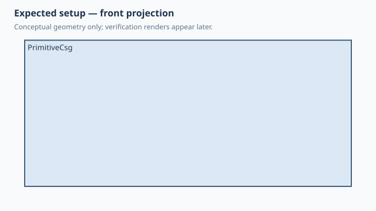

Forge model example
Primitive CSG
What this example makes
SolidCraft accepts the complete CSG command path, produces one valid clipped body and evaluates the native timeline without errors.


Forge code
This is the complete Forge source used for this example.
"""Core CSG qualification: primitives, transforms and Boolean operations."""
class PrimitiveCsg:
def build(self):
body = Sphere(20)
body = body + Box(30, 30, 20).move(x=18, z=10)
# Native principal-axis Cylinder, centered by default.
bore = Cylinder(d=8, h=60, axis=Axis.X)
body = body - bore
clip = Box(50, 50, 30).move(z=15)
return body & clip
PrimitiveCsg()
API used
Sphere(); Box(...).move(...); Cylinder(..., axis=Axis.X).at(...); + / - / &
Reference code
The same model is written independently with the reference libraries below. This makes it easier to compare modelling style and the resulting shape.
PythonSCAD
"""PythonSCAD reference for the primitive CSG qualification."""
from pythonscad import *
body = sphere(r=20)
body = body | cube([30, 30, 20], center=True).translate([18, 0, 10])
bore = cylinder(d=8, h=60).rotate([0, 90, 0]).translate([-30, 0, 0])
body = body - bore
clip = cube([50, 50, 30], center=True).up(15)
model = body & clip

Reference result checks · PASS · 3/3 passed
| Check | Status | Expected | Measured | Detail |
|---|---|---|---|---|
| bounds | PASS | {'min': [-19.595917942265423, -20.0, 0.0], 'max': [25.0, 20.0, 20.0]} | {'min': [-19.591799611167875, -19.890437907365467, 0.0], 'max': [25.0, 19.890437907365467, 20.0]} | max difference 0.10956209263453331 mm; allowed 0.5 mm |
| watertight | PASS | True | True | closed mesh |
| surface distance probes | PASS | 4 surface measurements | 4/4 within tolerance | largest difference 0.116233 mm |
pyBOSL2
"""pyBOSL2 reference for primitive union, difference and intersection."""
from pybosl2 import cuboid, sphere, xcyl
body = sphere(radius=20)
body = body | cuboid([30, 30, 20]).translate([18, 0, 10])
bore = xcyl(diameter=8, height=60)
body = body - bore
clip = cuboid([50, 50, 30]).up(15)
model = body & clip

Reference result checks · PASS · 3/3 passed
| Check | Status | Expected | Measured | Detail |
|---|---|---|---|---|
| bounds | PASS | {'min': [-19.595917942265423, -20.0, 0.0], 'max': [25.0, 20.0, 20.0]} | {'min': [-19.591798782348633, -19.890438079833984, 0.0], 'max': [25.0, 19.890438079833984, 20.0]} | max difference 0.10956192016601562 mm; allowed 0.5 mm |
| watertight | PASS | True | True | closed mesh |
| surface distance probes | PASS | 4 surface measurements | 4/4 within tolerance | largest difference 0.116233 mm |
CadQuery
"""CadQuery reference for primitive union, difference and intersection."""
import cadquery as cq
sphere = cq.Solid.makeSphere(20)
box = cq.Solid.makeBox(30, 30, 20, cq.Vector(3, -15, 0))
body = sphere.fuse(box)
bore = cq.Workplane("YZ").circle(4).extrude(60, both=True).val()
body = body.cut(bore)
clip = cq.Solid.makeBox(50, 50, 30, cq.Vector(-25, -25, 0))
result = body.intersect(clip)
model = cq.Assembly()
model.add(result, name="csg")

Reference result checks · PASS · 3/3 passed
| Check | Status | Expected | Measured | Detail |
|---|---|---|---|---|
| bounds | PASS | {'min': [-19.595917942265423, -20.0, 0.0], 'max': [25.0, 20.0, 20.0]} | {'min': [-19.595918655395508, -19.9940128326416, 0.0], 'max': [25.0, 19.9940128326416, 20.0]} | max difference 0.0059871673583984375 mm; allowed 0.5 mm |
| watertight | PASS | True | True | closed mesh |
| surface distance probes | PASS | 4 surface measurements | 4/4 within tolerance | largest difference 0.014885 mm |
build123d
"""build123d reference: Builder-mode union, subtraction and intersection."""
from build123d import Box, BuildPart, Cylinder, Locations, Mode, Rot, Sphere
with BuildPart() as model:
Sphere(20)
with Locations((18, 0, 10)):
Box(30, 30, 20)
with Locations(Rot(0, 90, 0)):
Cylinder(4, 120, mode=Mode.SUBTRACT)
with Locations((0, 0, 15)):
Box(50, 50, 30, mode=Mode.INTERSECT)

Reference result checks · PASS · 3/3 passed
| Check | Status | Expected | Measured | Detail |
|---|---|---|---|---|
| bounds | PASS | {'min': [-19.595917942265423, -20.0, 0.0], 'max': [25.0, 20.0, 20.0]} | {'min': [-19.595918655395508, -19.9940128326416, -6.83481049534862e-16], 'max': [25.0, 19.9940128326416, 20.0]} | max difference 0.0059871673583984375 mm; allowed 0.5 mm |
| watertight | PASS | True | True | closed mesh |
| surface distance probes | PASS | 4 surface measurements | 4/4 within tolerance | largest difference 0.00350404 mm |
How Forge builds it in SolidCraft
solid.sphere(new), solid.box(join), one X-axis solid.cylinder(cut), then solid.box(intersect).
Show generated SolidCraft commands
solid.sphere
solid.box
solid.cylinder
solid.boxSolidCraft result
Built and measured with SolidCraft 0.42.0. Open the measurement details to inspect body sizes and editable parameters.
Original model · 1 bodies
This result has no editable parameters.
Body size
| Body | Minimum | Maximum |
|---|---|---|
| PrimitiveCsg | [-19.5959, -20, -7.19043e-16] | [25, 20, 20] |
Semantic validation · PASS · 5/5 checks passed
| Status | Level | Check | Expected | Actual |
|---|---|---|---|---|
| PASS | Q4 | declared target geometry | [{"label": "PrimitiveCsg", "min": [-19.595917942265423, -20, 0], "max": [25, 20, 20]}] | [{"min": [-19.595917942679407, -20.0, -7.190428807923865e-16], "max": [25.0, 20.0, 20.0]}] |
| PASS | Q4 | single resulting CSG body | 1 | 1 |
| PASS | Q4 | sphere survives CSG | 1 | 1 |
| PASS | Q4 | cylindrical bore survives CSG | 1 | 1 |
| PASS | Q4 | clipped bounds | {"min": [-19.595917942265423, -20, 0], "max": [25, 20, 20]} | {"max": [25.0, 20.0, 20.0], "min": [-19.595917942679407, -20.0, -7.190428807923865e-16]} |
Visual result
Actual is the SolidCraft render. Goal shows the expected shape. Overlay places both on top of each other so differences are easy to see.
Iso
Current SolidCraft iso view

Expected geometry in the same iso view

Expected geometry over the actual iso view
Front

Current SolidCraft front view

Expected geometry in the same front view

Expected geometry over the actual front view
Right

Current SolidCraft right view

Expected geometry in the same right view

Expected geometry over the actual right view
Technical test details
Q1 and Q2 tests
These are the exact automated tests used for this example.
- Q1 PASS
- Q2 PASS
Geometry checks
These are the sizes and measurement points used by the automated checks.
| Body | Minimum | Maximum |
|---|---|---|
| PrimitiveCsg | [-19.595917942265423, -20, 0] | [25, 20, 20] |
- Is the size check enough for this model? No — Many different Boolean results can share this envelope. Surface probes must prove the surviving sphere, bore, clipped box and unioned extension.
- Views checked: iso, front, right
- Closed solid expected: True
- Surface points checked: 4
Show all geometry check points
Surface measurement points
- surviving sphere interior: point
[-10.0, 0.0, 10.0]→ 5.857864376269049 mm (±0.3 mm) - cylindrical bore: point
[0.0, 0.0, 1.0]→ 3.0 mm (±0.3 mm) - clip plane at x=25: point
[27.0, 10.0, 10.0]→ 2.0 mm (±0.3 mm) - unioned box extension: point
[23.0, 14.0, 10.0]→ 1.0 mm (±0.3 mm)
Saved-design test
No saved-model change is required. No saved-design mutation in this case; it isolates primitive CSG lowering. Parametric edits are covered by dedicated Q5 cases.
Raw test files
- Forge fixture source
- PythonSCAD reference source
- pyBOSL2 reference source
- CadQuery reference source
- build123d reference source
- Generated command JSON in build output
- results.json
- measurements.json
- joint-inspect.json
- model.sc
- model.step
- qualification-result.json
- validation.json
- visual-validation.json
- camera-front.json
- camera-iso.json
- camera-right.json
- q1-case-evidence.txt
- q2-case-evidence.txt
- Native snapshot: model.png
- Native snapshot: model-front.png
- Native snapshot: goal-front.png
- Native snapshot: overlay-front.png
- Native snapshot: visual-diff-front.png
- Native snapshot: model-right.png
- Native snapshot: goal-right.png
- Native snapshot: overlay-right.png
- Native snapshot: visual-diff-right.png
- Native snapshot: model-iso.png
- Native snapshot: goal-iso.png
- Native snapshot: overlay-iso.png
- Native snapshot: visual-diff-iso.png
- Reference evidence: reference-pythonscad/result.json
- Reference evidence: reference-pythonscad/model.stl
- Reference evidence: reference-pythonscad/model-front.png
- Reference evidence: reference-pythonscad/model-right.png
- Reference evidence: reference-pythonscad/model-iso.png
- Reference evidence: reference-pybosl2/result.json
- Reference evidence: reference-pybosl2/model.stl
- Reference evidence: reference-pybosl2/model-front.png
- Reference evidence: reference-pybosl2/model-right.png
- Reference evidence: reference-pybosl2/model-iso.png
- Reference evidence: reference-cadquery/result.json
- Reference evidence: reference-cadquery/model.stl
- Reference evidence: reference-cadquery/model-front.png
- Reference evidence: reference-cadquery/model-right.png
- Reference evidence: reference-cadquery/model-iso.png
- Reference evidence: reference-build123d/result.json
- Reference evidence: reference-build123d/model.stl
- Reference evidence: reference-build123d/model-front.png
- Reference evidence: reference-build123d/model-right.png
- Reference evidence: reference-build123d/model-iso.png


Reference documentation
- OpenSCAD: Closest to ordinary union()/difference()/intersection() with translate()/rotate() around primitives.
- PythonSCAD: Useful comparison for Python objects and operators while Forge still delegates all geometry to SolidCraft.